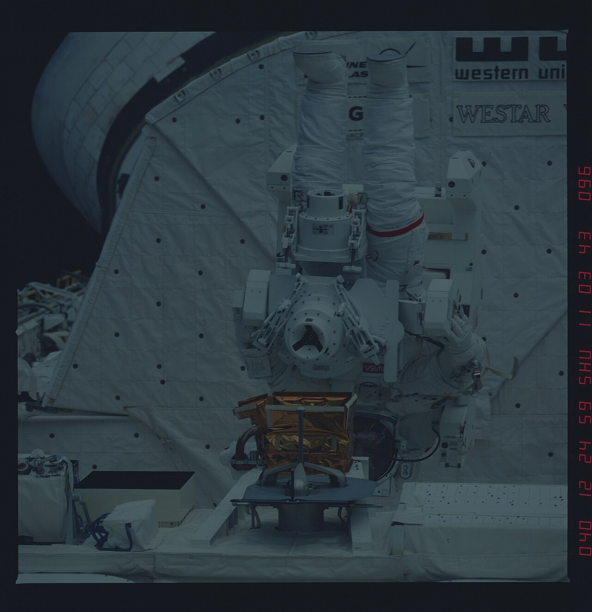

EVA physiology
A spacewalk is a 6–8 hour endurance event in a 1/3-atmosphere oxygen-pressurised suit — preceded by hours of pre-breathe to keep the bends at bay.
The fundamental EVA problem is that the human body wants Earth-sealevel atmosphere — 1 atm of mixed N₂/O₂ — and the spacesuit can't deliver it without becoming so rigid the astronaut can't move. So the suit runs at about 4.3 psi (0.29 atm) of pure oxygen. That's enough partial pressure of O₂ to breathe comfortably, but the abrupt drop from station pressure (14.7 psi, ~80% N₂) to suit pressure (4.3 psi, 100% O₂) would cause decompression sickness — the bends — exactly the way scuba divers get them on a fast ascent.
The countermeasure is pre-breathe: hours of breathing pure oxygen at gradually lower pressures before egress, washing nitrogen out of body tissues. The current US-side ISS protocol uses an in-suit pre-breathe + the Campout protocol (overnight at 10.2 psi) totalling about 4 hours before the airlock depressurises. Russian Orlan suits run at 5.7 psi, which shortens pre-breathe substantially — different trade-off.
Once outside, the work is physically harder than it looks. Even small motions require constant arm and grip strength against suit rigidity; experienced spacewalkers describe the EMU gloves as the single most fatiguing piece of equipment ever flown. Fingernail damage is common. Hand cramps and shoulder strain limit EVA duration before metabolic budget does. Modern EVAs cap around 7 hours nominal, 8.5 hours with extension; longer than that and crew error rates rise sharply.
Suit risks also include thermal management (the suit dumps about 250 W of metabolic heat into a sublimator that vents water vapour to space), CO₂ scrubbing (lithium-hydroxide canister or amine swing bed), and the constant risk of a glove or visor puncture. Astronauts train the same EVA in the Neutral Buoyancy Laboratory pool roughly 10 hours of training per 1 hour of flight EVA — the cost-per-hour of spacewalking is the highest of any astronaut activity.
